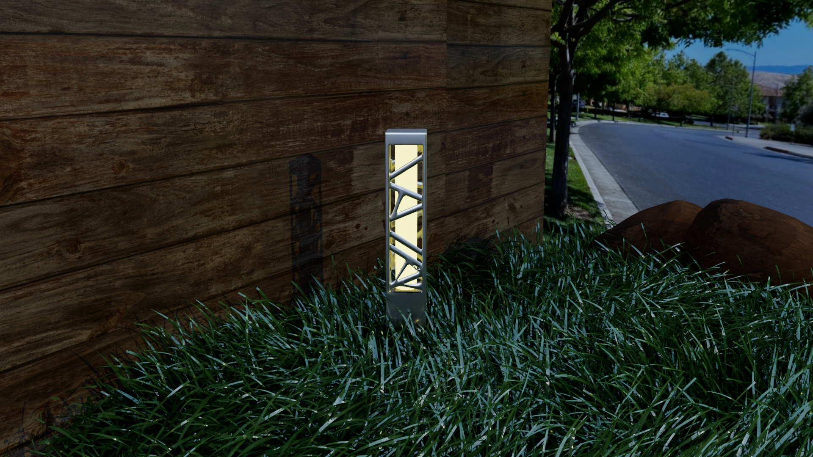

<section class="bollard-auto-scroll">
  <button class="scroll-btn left" aria-label="Scroll Left">
    <i class="bi bi-chevron-left"></i>
  </button>

  <div class="scroll-wrapper" id="bollardScroll">
    <div class="scroll-track">
      
      
      
      
      
      
    </div>
  </div>

  <button class="scroll-btn right" aria-label="Scroll Right">
    <i class="bi bi-chevron-right"></i>
  </button>
</section>
<style>
  .bollard-auto-scroll {
  position: relative;
  background: #0b0f14;
  padding: 90px 0;
  overflow: visible;
}

/* WRAPPER */
.scroll-wrapper {
  overflow: hidden;
  width: 100%;
}

/* TRACK */
.scroll-track {
  display: flex;
  gap: 40px;
  padding: 0 80px;
  animation: autoScroll 40s linear infinite;
}

/* IMAGES */
.scroll-track img {
  height: 360px;
  border-radius: 22px;
  box-shadow: 0 30px 60px rgba(0,0,0,0.55);
  flex-shrink: 0;
  transition: transform 0.6s ease;
}

.scroll-track img:hover {
  transform: scale(1.06);
}

/* AUTO SCROLL */
@keyframes autoScroll {
  0% { transform: translateX(0); }
  100% { transform: translateX(-50%); }
}

.scroll-btn {
  position: absolute;
  top: 50%;
  transform: translateY(-50%);
  background: none;          /* NO background */
  border: none;
  color: #fff;
  font-size: 44px;           /* icon size */
  cursor: pointer;
  z-index: 99999;
  padding: 0;
  transition: color 0.3s ease, transform 0.3s ease;
}

.scroll-btn:hover {
  color: #ffffff;
  transform: translateY(-50%) scale(1.15);
}

.scroll-btn.left { left: 20px; }
.scroll-btn.right { right: 20px; }


/* MOBILE */
@media (max-width: 768px) {
  .scroll-track img {
    height: 260px;
  }
}

</style>

<script>
const scrollTrack = document.querySelector(".scroll-track");
const scrollWrapper = document.getElementById("bollardScroll");

let autoScroll = true;

/* Pause auto scroll on hover */
scrollWrapper.addEventListener("mouseenter", () => {
  scrollTrack.style.animationPlayState = "paused";
});
scrollWrapper.addEventListener("mouseleave", () => {
  scrollTrack.style.animationPlayState = "running";
});

/* Manual buttons */
document.querySelector(".scroll-btn.left").onclick = () => {
  scrollWrapper.scrollBy({ left: -400, behavior: "smooth" });
};

document.querySelector(".scroll-btn.right").onclick = () => {
  scrollWrapper.scrollBy({ left: 400, behavior: "smooth" });
};
</script>
